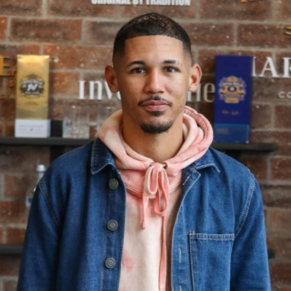

Bradley November
Content Creator

Content Creator
Hi, I'm Bradley November, a content creator. My content is mostly focused on lifestyle and what the ordinary person goes through on a daily basis. My aim is to use my social media as a tool to showcase how we are unique yet similar, hopefully to link creatives and the everyday person alike. I have a huge passion for Afrikaans music as a whole and have spent a lot of time on various projects to help elevate and support this ever-growing culture. My mission is to ultimately show that the ordinary guy can reach the extraordinary through everyday efforts and perseverance.